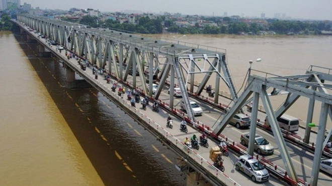
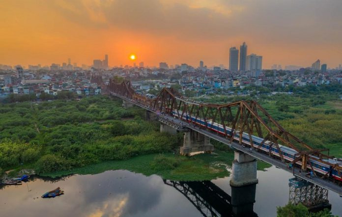
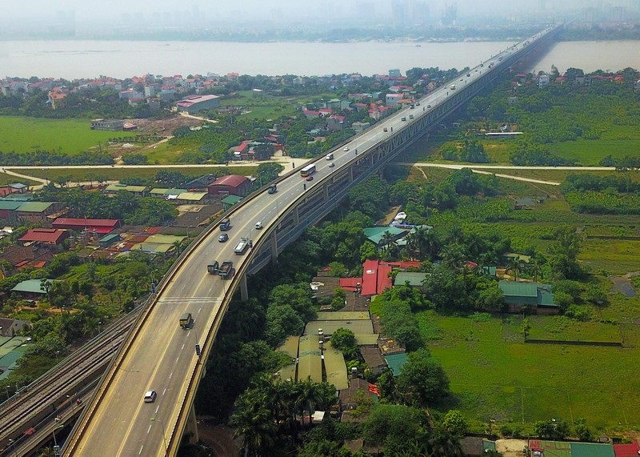
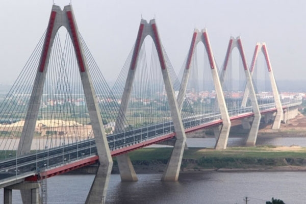
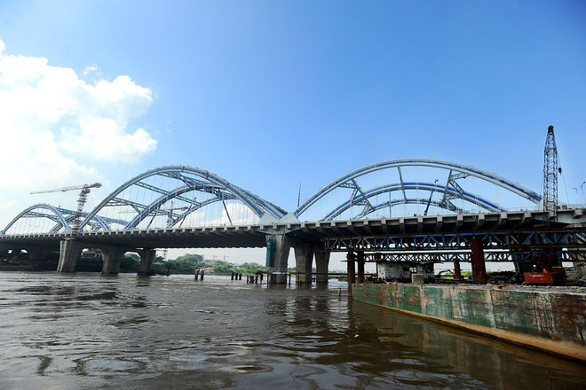
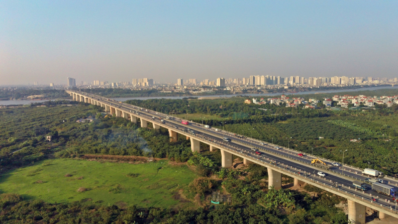

Cầu Chương Dương có chiều dài 1.230 m, gồm 21 nhịp, trong đó 11 nhịp thép, 10 nhịp bê tông. Cầu chia làm 4 làn xe chạy, ở giữa có phần cánh gà mỗi bên rộng 5m, phía ngoài cùng có làn đường dành cho xe máy rộng 1,5m.
Đây là cây cầu lớn lần đầu tiên được thiết kế và thi công tại Việt Nam không cần có sự trợ giúp kĩ thuật của các kỹ sư nước ngoài nối trung tâm quận Hoàn Kiếm với quận Long Biên. Cây cầu này được xây dựng một cách nhanh chóng bằng các vật liệu “đầu thừa đuôi thẹo” trong sự dở dang của cầu Thăng Long. Nhưng cầu Chương Dương đã đi vào lịch sử Hà Nội với tất cả tình yêu của mỗi người dân Thủ đô khi trở thành “cứu cánh” cho cầu Long Biên đang ngày “yếu đi".
Cầu Thăng Long cách cầu Long Biên 11 km về phía thượng lưu sông Hồng. Cầu Thăng Long có quá trình chuẩn bị, thiết kế và thi công rất dài. Cầu được xem là công trình thế kỷ của tình hữu nghị Việt Xô sau 11 năm thi công (1974-1985) đồng thời là cây cầu có quy mô lớn vào loại bậc nhất Việt Nam và vùng Đông Nam Á thời điểm đó. Đây là cây cầu nối huyện Đông Anh với quận Bắc Từ Liêm, nối liền Thủ đô với sân bay quốc tế Nội Bài, cửa ngõ quan trọng đưa khách quốc tế đến Hà Nội và các tỉnh phía Bắc.
Cầu Nhật Tân là một trong những cây cầu huyết mạch của thủ đô Hà Nội. Là một trong những công trình giao thông trọng điểm của Hà Nội nối quận Tây Hồ với huyện Đông Anh, kết cấu nhịp cầu chính theo dạng cầu dây văng nhiều nhịp với 5 trụ tháp hình thoi và 6 nhịp dây văng. Cầu được xem là biểu tượng mới của Thủ đô Hà Nội với 5 nhịp dây văng tượng trưng cho 5 cửa ô. Cầu Nhật Tân không chỉ có ý nghĩa lớn về kinh tế mà còn có ý nghĩa chính trị, xã hội trong mối quan hệ hợp tác giữa Việt Nam và Nhật Bản.
Cầu Đông Trù được áp dụng công nghệ mới và là cầu vòm ống thép nhồi bê tông đầu tiên ở khu vực Đông Nam Á, có khả năng chịu được động đất cấp 8. Đây là một cây cầu “trẻ” nối huyện Đông Anh với quận Long Biên tuy chỉ dài 1,1km bắc qua sông Đuống nhưng đây được coi là công trình không chỉ là bước đột phá trong tiến trình phát triển của thủ đô, mà còn là đòn bẩy góp phần thúc đẩy các khu công nghiệp, đô thị phía Bắc sông Hồng.
Cầu Thanh Trì là cây cầu lớn nhất trong dự án 7 cây cầu của Hà Nội bắc qua sông Hồng, nối quận Hoàng Mai với quận Long Biên, được coi là dự án cầu lớn nhất Đông Dương hiện nay. Đây là cây cầu nối tuyến cao tốc huyết mạch của Thủ đô nối đi các tỉnh phía Bắc tạo điều kiện thuận lợi cho các xe trọng tải lớn được lăn bánh mà không phải chờ đợi vì cảnh ách tắc giao thông.
